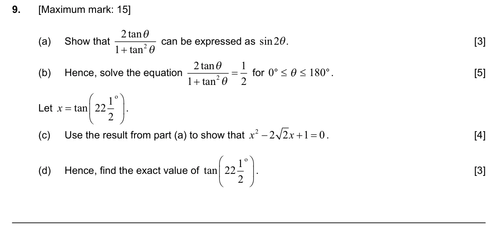
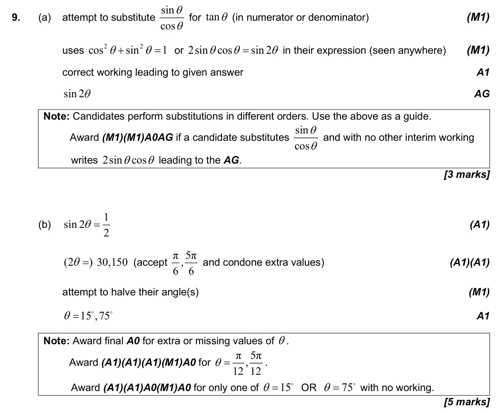
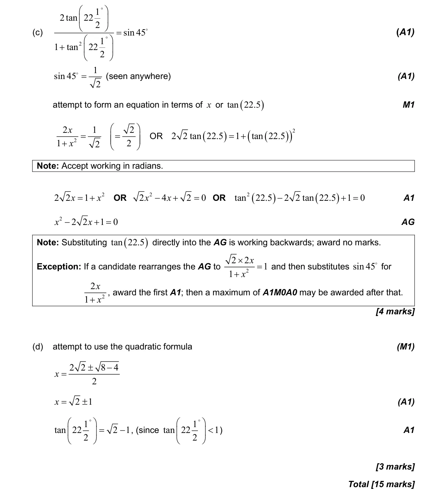

3.5 Unit circle definitions, exact trig ratios and ambiguous case of sine rule3.8 Solving trigonometric equations2.7 Solutions of quadratic equations and inequalities, discriminant and nature of roots3.6 Pythagorean identity and double angles1.6 Simple deductive proof
Question

Markscheme

